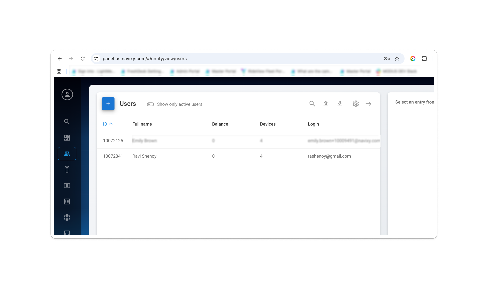
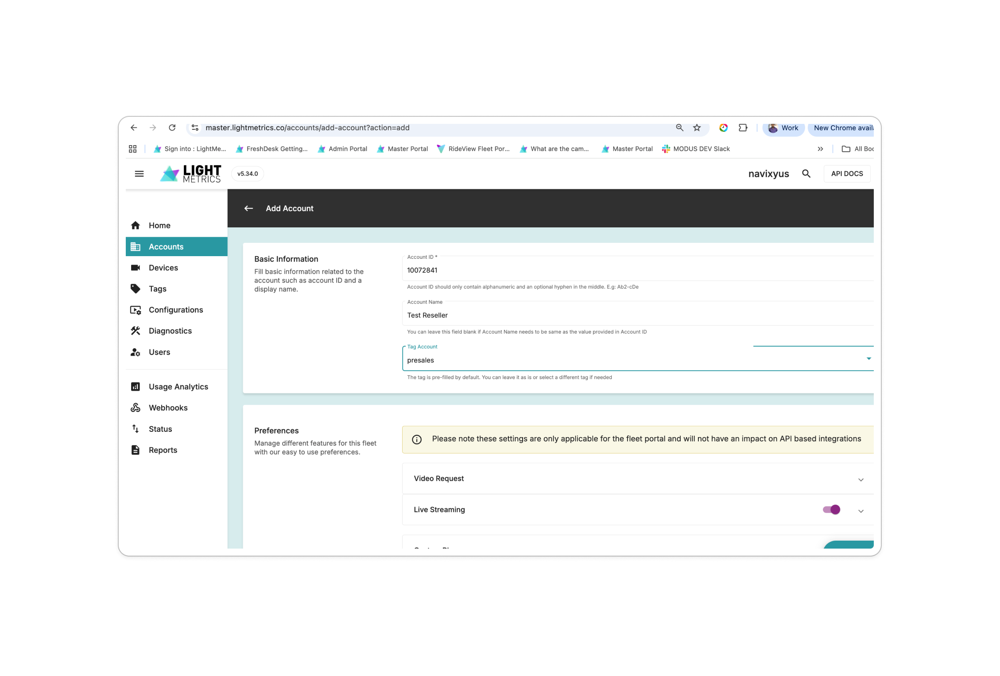
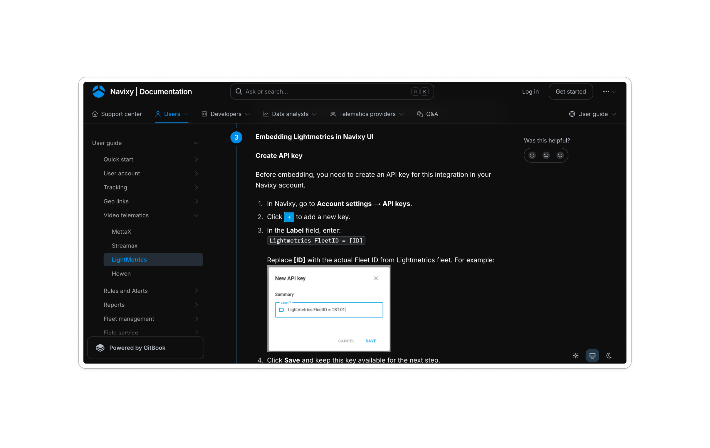
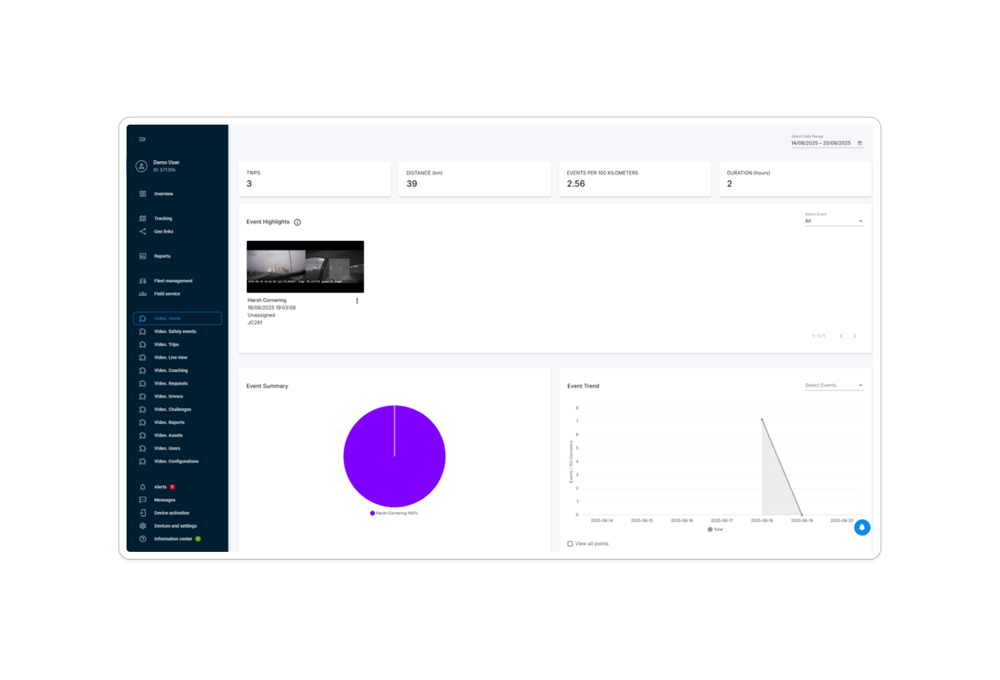
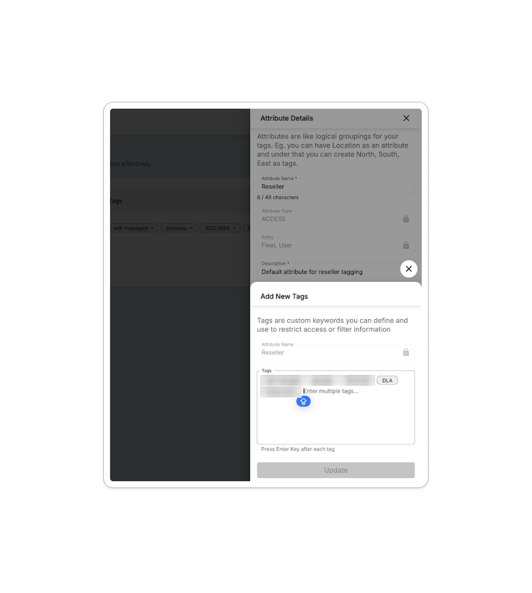
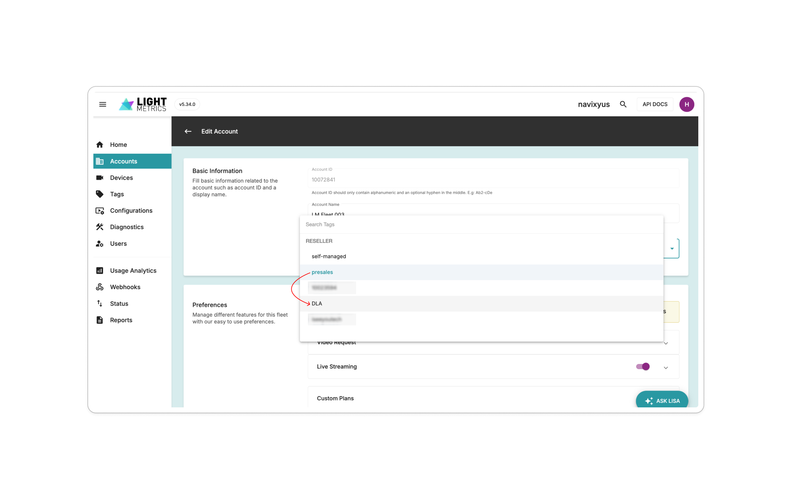
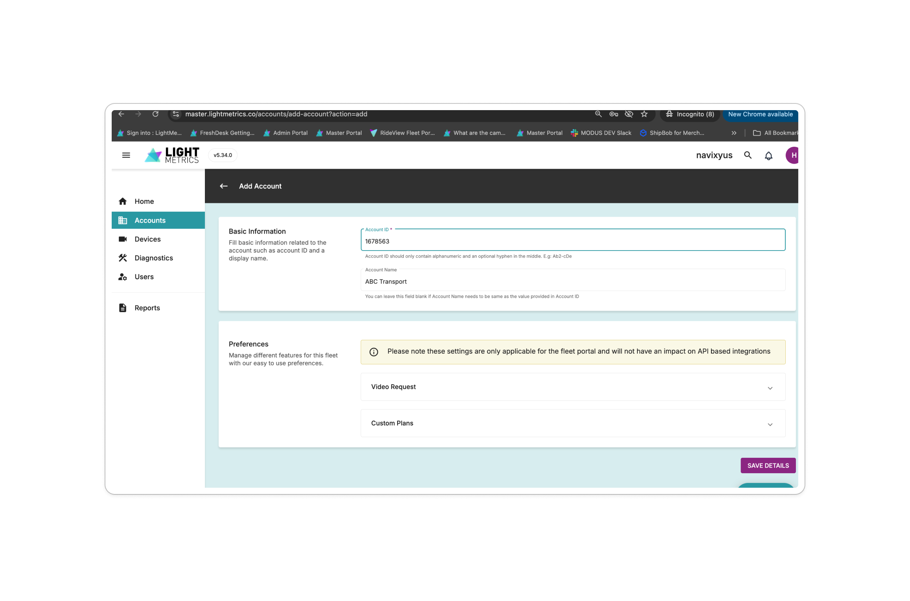
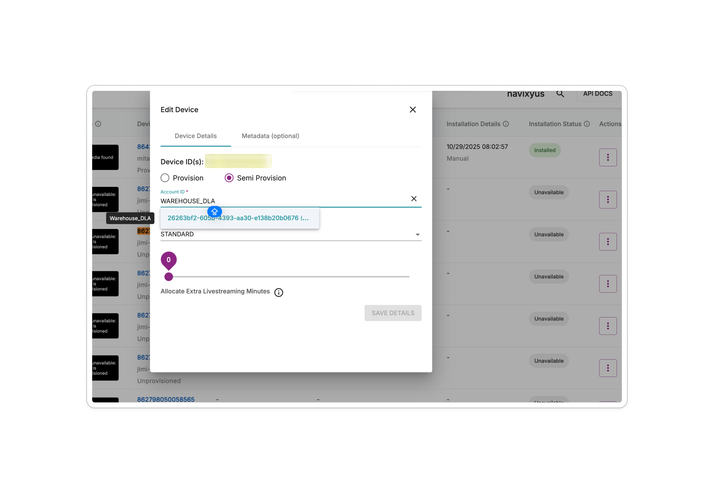
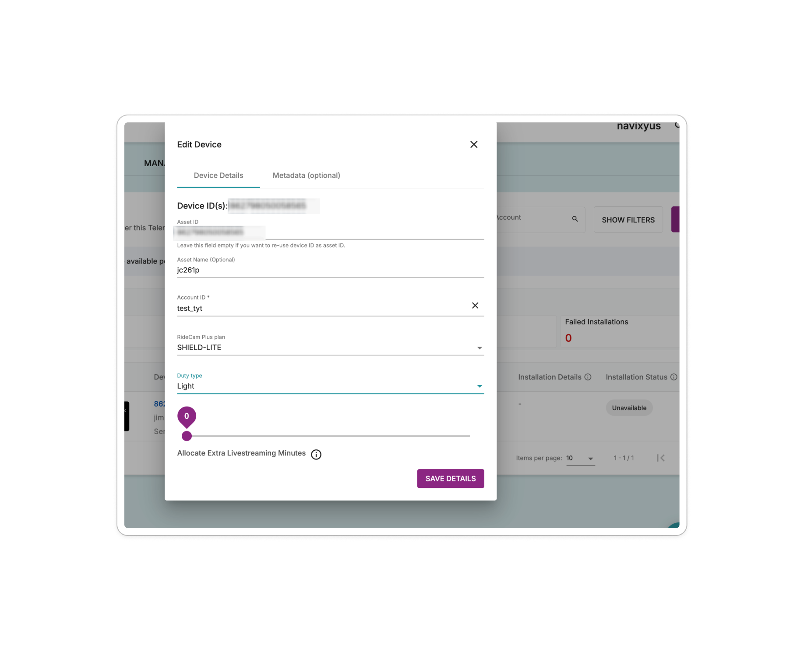
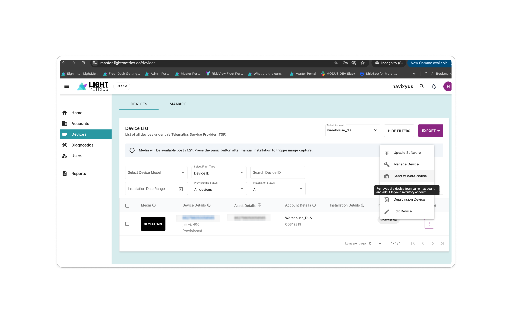

LIGHTMETRICS SALES / OPERATIONS
Navixy Reseller Onboarding Incorporación de Revendedores Navixy Intégration des Revendeurs Navixy
End-to-end workflow from Pilot to Production with Device Addition Flujo de trabajo integral desde Piloto hasta Producción con Adición de Dispositivos Flux de travail complet du Pilote à la Production avec Ajout d'Appareils
Process Overview Resumen del Proceso Aperçu du Processus
This document describes the complete workflow for onboarding a new reseller onto the Navixy portal integrated with LightMetrics. It covers three sequential stages: setting up a pilot account, transferring from pilot to production, and adding devices in production. Este documento describe el flujo de trabajo completo para la incorporación de un nuevo revendedor en el portal de Navixy integrado con LightMetrics. Cubre tres etapas secuenciales: configuración de una cuenta piloto, transferencia de piloto a producción y adición de dispositivos en producción. Ce document décrit le flux de travail complet pour l'intégration d'un nouveau revendeur sur le portail Navixy intégré à LightMetrics. Il couvre trois étapes séquentielles : la mise en place d'un compte pilote, le transfert du pilote à la production et l'ajout d'appareils en production.
Scope Alcance Portée
- Navixy platform onboarding and LightMetrics Master Portal configuration Incorporación en la plataforma Navixy y configuración del Portal Maestro de LightMetrics Intégration à la plateforme Navixy et configuration du Portail Maître LightMetrics
- Account creation, tagging, device provisioning, and fleet management Creación de cuentas, etiquetado, aprovisionamiento de dispositivos y gestión de flotas Création de comptes, balisage, provisionnement d'appareils et gestion de flottes
Roles & Responsibilities Roles y Responsabilidades Rôles et Responsabilités
| Role Rol Rôle | Description Descripción Description |
|---|---|
| Navixy Portal Admin | Creates reseller accounts on the Navixy portal. Does not manage fleet accounts — fleet management is the responsibility of each Reseller Admin. Crea cuentas de revendedores en el portal de Navixy. No gestiona las cuentas de flotas — la gestión de flotas es responsabilidad de cada Administrador de Revendedor. Crée les comptes revendeurs sur le portail Navixy. Ne gère pas les comptes de flottes — la gestion des flottes relève de chaque Administrateur Revendeur. |
| Lightmetrics Sales Engineer | Manages Master Portal accounts, tagging, and device provisioning Administra cuentas del Portal Maestro, etiquetado y aprovisionamiento de dispositivos Gère les comptes du Portail Maître, le balisage et le provisionnement des appareils |
| Reseller Admin | Each reseller account has a Reseller Admin who is responsible for managing fleet accounts associated with their reseller account on the us.navixy master portal. Cada cuenta de revendedor tiene un Administrador de Revendedor que es responsable de gestionar las cuentas de flota asociadas a su cuenta de revendedor en el portal maestro de us.navixy. Chaque compte revendeur dispose d'un Administrateur Revendeur responsable de la gestion des comptes de flotte associés à son compte revendeur sur le portail maître us.navixy. |
| Reseller Fleet User | End user who can access the fleet account on the Navixy portal. After iFrame integration is complete, Fleet Users can view RideView pages on the Navixy portal. Usuario final que puede acceder a la cuenta de flota en el portal de Navixy. Una vez completada la integración de iFrame, los Usuarios de Flota pueden visualizar las páginas de RideView en el portal de Navixy. Utilisateur final qui peut accéder au compte de flotte sur le portail Navixy. Une fois l'intégration iFrame terminée, les Utilisateurs de Flotte peuvent consulter les pages RideView sur le portail Navixy. |
Prerequisites Prerrequisitos Prérequis
Pilot Phase: New Reseller Onboarding Fase Piloto: Incorporación de Nuevo Revendedor Phase Pilote: Intégration d'un Nouveau Revendeur
Set up the initial pilot account involving Navixy Portal Admin, LightMetrics Sales Engineer, and the Reseller Admin. Configure la cuenta piloto inicial involucrando al Administrador del Portal Navixy, Ingeniero de Ventas de LightMetrics y el Administrador del Revendedor. Configurez le compte pilote initial impliquant l'Administrateur Portail Navixy, l'Ingénieur Commercial LightMetrics et l'Administrateur Revendeur.
Navixy Portal Portal de Navixy Portail Navixy
Actor: Navixy Portal Admin Actor: Administrador del Portal Navixy Acteur: Administrateur Portail Navixy
- Create the fleet Crear la flota Créer la flotte — In the Navixy Portal, the Navixy Admin creates a new fleet with the Reseller's Name. — En el Portal de Navixy, el Administrador de Navixy crea una nueva flota con el Nombre del Revendedor. — Dans le Portail Navixy, l'Administrateur Navixy crée une nouvelle flotte avec le Nom du Revendeur.
- Temporary sign-up email Correo electrónico temporal de registro Email d'inscription temporaire — The system sends a temporary (password) sign-up email to the Reseller. — El sistema envía un correo electrónico temporal (con contraseña) de registro al Revendedor. — Le système envoie un email d'inscription temporaire (avec mot de passe) au Revendeur.
- Reseller logs in El Revendedor inicia sesión Le Revendeur se connecte — The Reseller receives the email and logs into the Navixy Portal. — El Revendedor recibe el correo y accede al Portal de Navixy. — Le Revendeur reçoit l'email et se connecte au Portail Navixy.

Lightmetrics Master Portal Portal Maestro de Lightmetrics Portail Maître Lightmetrics
Actor: Lightmetrics Sales Engineer Actor: Ingeniero de Ventas de Lightmetrics Acteur: Ingénieur Commercial Lightmetrics
- Navigate to Accounts Navegar a Cuentas Naviguer vers Comptes — In the LightMetrics Master Portal, navigate to the Accounts section. — En el Portal Maestro de LightMetrics, navegue a la sección de Cuentas. — Dans le Portail Maître LightMetrics, naviguez vers la section Comptes.
- Click Add Accounts Hacer clic en Agregar Cuentas Cliquer sur Ajouter des Comptes — Click the Add Accounts button. — Haga clic en el botón Agregar Cuentas. — Cliquez sur le bouton Ajouter des Comptes.
- Enter Account ID and tag Ingresar ID de cuenta y etiquetar Saisir l'identifiant de compte et baliser — Enter the user ID from Navixy as the Account ID when creating a new Reseller account, and tag it as presales. — Ingrese el ID de usuario de Navixy como el ID de Cuenta al crear una nueva cuenta de Revendedor, y etiquétela como presales. — Saisissez l'identifiant utilisateur de Navixy comme ID de Compte lors de la création d'un nouveau compte Revendeur, et balisez-le comme presales.

Navixy Integration Integración de Navixy Intégration Navixy
Actor: Reseller Admin Actor: Administrador del Revendedor Acteur: Administrateur Revendeur
- Integrate LightMetrics in Navixy portal Integrar LightMetrics en el portal de Navixy Intégrer LightMetrics dans le portail Navixy — Follow the Navixy Documentation to complete the LightMetrics integration within the Navixy portal. — Siga la Documentación de Navixy para completar la integración de LightMetrics dentro del portal de Navixy. — Suivez la Documentation Navixy pour compléter l'intégration LightMetrics dans le portail Navixy.
- Verify RideView access Verificar acceso a RideView Vérifier l'accès à RideView — Once integration is complete, the Reseller Fleet can view RideView screens on Navixy. — Una vez completada la integración, la Flota del Revendedor puede visualizar las pantallas de RideView en Navixy. — Une fois l'intégration terminée, la Flotte du Revendeur peut consulter les écrans RideView sur Navixy.


Reseller Transfer: Pilot → Production Transferencia del Revendedor: Piloto → Producción Transfert Revendeur: Pilote → Production
Move the reseller from pilot status to full production access. Mueva al revendedor del estado piloto al acceso completo de producción. Faites passer le revendeur du statut pilote à l'accès production complet.
Trigger Disparador Déclencheur
The Pilot Reseller confirms readiness and requests a LightMetrics Master portal account. El Revendedor Piloto confirma que está listo y solicita una cuenta en el Portal Maestro de LightMetrics. Le Revendeur Pilote confirme qu'il est prêt et demande un compte sur le Portail Maître LightMetrics.
LightMetrics Process Proceso de LightMetrics Processus LightMetrics
Actor: Lightmetrics Sales Engineer Actor: Ingeniero de Ventas de Lightmetrics Acteur: Ingénieur Commercial Lightmetrics
- Create a new tag Crear una nueva etiqueta Créer un nouveau tag — In the Master Portal, create a new tag specific to this reseller. — En el Portal Maestro, cree una nueva etiqueta específica para este revendedor. — Dans le Portail Maître, créez un nouveau tag spécifique à ce revendeur.
- Change account tag Cambiar la etiqueta de la cuenta Modifier le tag du compte — Update the account tag from presales to the Reseller's tag. — Actualice la etiqueta de la cuenta de presales a la etiqueta del Revendedor. — Mettez à jour le tag du compte de presales vers le tag du Revendeur.


Decision Point — iFrame Integration Punto de Decisión — Integración iFrame Point de Décision — Intégration iFrame
Is iFrame integration already complete in Pilot? ¿La integración de iFrame ya está completa en Piloto? L'intégration iFrame est-elle déjà terminée en Pilote?

Production: Device Addition Producción: Adición de Dispositivos Production: Ajout d'Appareils
Add and provision devices for reseller fleets in production. Agregue y aprovisione dispositivos para las flotas del revendedor en producción. Ajoutez et provisionnez des appareils pour les flottes revendeur en production.
Reseller Creates a New Account El Revendedor Crea una Nueva Cuenta Le Revendeur Crée un Nouveau Compte
Actor: Reseller Admin Actor: Administrador del Revendedor Acteur: Administrateur Revendeur
- Create a fleet on the Navixy Portal Crear una flota en el Portal de Navixy Créer une flotte sur le Portail Navixy — Log into Navixy's master portal using your reseller account, navigate to Accounts, and create a new fleet account. This generates a user ID. — Inicie sesión en el portal maestro de Navixy usando su cuenta de revendedor, navegue a Cuentas y cree una nueva cuenta de flota. Esto genera un ID de usuario. — Connectez-vous au portail maître de Navixy avec votre compte revendeur, naviguez vers Comptes et créez un nouveau compte de flotte. Cela génère un identifiant utilisateur.
- Create an account on the LightMetrics Master Portal Crear una cuenta en el Portal Maestro de LightMetrics Créer un compte sur le Portail Maître LightMetrics — Navigate to Accounts → Add Account in the LightMetrics Master Portal. Enter the user ID from the Navixy portal as the Account ID, add the account name, and click Save. — Navegue a Cuentas → Agregar Cuenta en el Portal Maestro de LightMetrics. Ingrese el ID de usuario del portal de Navixy como el ID de Cuenta, agregue el nombre de la cuenta y haga clic en Guardar. — Naviguez vers Comptes → Ajouter un Compte dans le Portail Maître LightMetrics. Saisissez l'identifiant utilisateur du portail Navixy comme ID de Compte, ajoutez le nom du compte et cliquez sur Enregistrer.

LightMetrics Adds Devices LightMetrics Agrega Dispositivos LightMetrics Ajoute des Appareils
Actor: Lightmetrics Sales Engineer Actor: Ingeniero de Ventas de Lightmetrics Acteur: Ingénieur Commercial Lightmetrics
LightMetrics will add new devices (IMEIs) on the Navixy Master Portal as requested. LightMetrics agregará nuevos dispositivos (IMEIs) en el Portal Maestro de Navixy según lo solicitado. LightMetrics ajoutera de nouveaux appareils (IMEI) sur le Portail Maître Navixy selon la demande.
- Navigate to Devices Navegar a Dispositivos Naviguer vers Appareils — Go to the Devices section in the portal. — Vaya a la sección de Dispositivos en el portal. — Allez à la section Appareils dans le portail.
- Edit device details Editar detalles del dispositivo Modifier les détails de l'appareil — Select the device and open the edit panel. — Seleccione el dispositivo y abra el panel de edición. — Sélectionnez l'appareil et ouvrez le panneau de modification.
- Configure provisioning Configurar aprovisionamiento Configurer le provisionnement — Select Semi Provision, choose the Warehouse_ID for the reseller, and save the details. — Seleccione Semi Provision, elija el Warehouse_ID para el revendedor y guarde los detalles. — Sélectionnez Semi Provision, choisissez le Warehouse_ID pour le revendeur et enregistrez les détails.

Reseller Provisions Device to Account El Revendedor Aprovisiona el Dispositivo a la Cuenta Le Revendeur Provisionne l'Appareil au Compte
Actor: Reseller Admin Actor: Administrador del Revendedor Acteur: Administrateur Revendeur
- Log in and navigate to Devices Iniciar sesión y navegar a Dispositivos Se connecter et naviguer vers Appareils — Log into Navixy's master portal using your reseller account and navigate to the Devices section. — Inicie sesión en el portal maestro de Navixy usando su cuenta de revendedor y navegue a la sección de Dispositivos. — Connectez-vous au portail maître de Navixy avec votre compte revendeur et naviguez vers la section Appareils.
- Search for warehouse Buscar almacén Rechercher l'entrepôt — In the account filter, search for the account "warehouse". — En el filtro de cuentas, busque la cuenta "warehouse". — Dans le filtre de comptes, recherchez le compte « warehouse ».
- Edit the device Editar el dispositivo Modifier l'appareil — Locate the device and click Edit. — Localice el dispositivo y haga clic en Editar. — Localisez l'appareil et cliquez sur Modifier.
-
Update New-Fleet Account
Actualizar cuenta de Nueva Flota
Mettre à jour le compte Nouvelle Flotte
- Clear the current account name Borre el nombre de cuenta actual Effacez le nom de compte actuel
- Search for the desired new fleet account Busque la cuenta de flota deseada Recherchez le compte de flotte souhaité
- Select a plan for the device Seleccione un plan para el dispositivo Sélectionnez un forfait pour l'appareil
- Select a duty type Seleccione un tipo de servicio Sélectionnez un type de service
- Click Save to confirm Haga clic en Guardar para confirmar Cliquez sur Enregistrer pour confirmer

Transfer Device to Another Fleet (Optional) Transferir Dispositivo a Otra Flota (Opcional) Transférer un Appareil vers une Autre Flotte (Optionnel)
Actor: Reseller Admin Actor: Administrador del Revendedor Acteur: Administrateur Revendeur
To reassign a device from one fleet to another: Para reasignar un dispositivo de una flota a otra: Pour réaffecter un appareil d'une flotte à une autre:
- Remove device from fleet Eliminar dispositivo de la flota Retirer l'appareil de la flotte — Navigate to the device in the current fleet, open the context menu, and select Send to Warehouse. — Navegue al dispositivo en la flota actual, abra el menú contextual y seleccione Enviar a Almacén. — Naviguez vers l'appareil dans la flotte actuelle, ouvrez le menu contextuel et sélectionnez Envoyer à l'Entrepôt.
- Re-provision Re-aprovisionar Re-provisionner — The device returns to the warehouse. Follow the steps in 3.3 to provision it to a different fleet account. — El dispositivo regresa al almacén. Siga los pasos de 6.3 para aprovisionarlo a una cuenta de flota diferente. — L'appareil retourne à l'entrepôt. Suivez les étapes de 6.3 pour le provisionner sur un autre compte de flotte.

Stage 3 Complete Flow Flujo Completo de la Etapa 3 Flux Complet de l'Étape 3